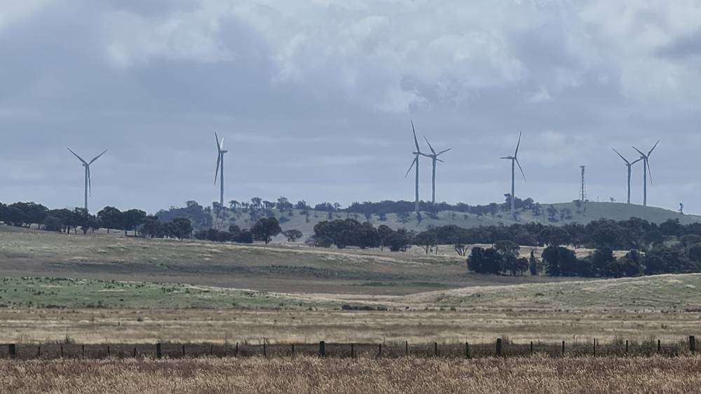

호주 사파이어 풍력단지 공동체 기금, 인버렐 지역 15개 사업에 약 14만2,000호주달러…구조대 장비·학교 놀이터 지원

23건 신청 중 15건 선정, 가장 큰 2만 호주달러는 배터리 구조 장비에…다음 신청은 2027년 1월 11일부터
호주 뉴사우스웨일스주 인버렐 지역의 사파이어 풍력단지 공동체 이익 기금이 2026년 2차 배분에서 지역 단체 15곳에 모두 14만1,969.67호주달러를 지원한다. 기금 위원회는 지난달 19일 회의에서 신청 23건을 심사해 체육·응급구조·교육·보건·문화유산·지역 행사 분야 사업을 골랐다. 가장 큰 2만 호주달러는 인버렐 구조대의 배터리식 구조 장비 구입에 돌아갔고, 검플랫 학교 학부모회의 놀이 마을 조성에 1만8,755호주달러, 애슈퍼드 볼링클럽의 조명 교체에 1만4,000호주달러가 배정됐다. 케이트 다이트 인버렐 군수는 이번 지원이 몇 년이 걸렸을지 모를 사업을 앞당겨 준다고 밝혔다. 2027년 1차 신청은 1월 11일부터 2월 19일까지 받는다.
시민에너지 관점
같은 날 스코틀랜드 베리번에서도 풍력 기금이 주민 단체 17곳을 도왔듯, 발전소가 들어선 지역에 정기적으로 돈이 돌아가는 구조는 이제 해외에서 흔한 기본값이 됐다. 이런 기금은 '발전소는 외지 사람 돈벌이'라는 불신을 누그러뜨리고, 구조대 장비나 학교 놀이터처럼 주민이 바로 느끼는 변화를 만든다. 그러나 기금만으로는 사업자가 정한 몫을 받는 데 그치므로, 주민이 지분을 갖고 이익과 결정권을 함께 나누는 소유 구조로 나아가야 한다. 우리 지자체도 풍력·태양광 허가 단계에서 지역 기금과 주민 지분 참여를 함께 요구하자.
출처: New England Times 2026-11-08 New England Times News Desk 원문 보기
豪サファイア風力発電所の地域基金、インヴェレル地域の15事業に約14万2,000豪ドル…救助隊の装備や学校の遊び場を支援
申請23件のうち15件を選定、最大の2万豪ドルはバッテリー式救助装備に…次回の申請は2027年1月11日から
オーストラリア・ニューサウスウェールズ州インヴェレル地域のサファイア風力発電所コミュニティ利益基金が、2026年第2回の配分で地域団体15団体に計14万1,969.67豪ドルを支援する。基金委員会は10月19日の会合で申請23件を審査し、スポーツ、救急救助、教育、保健、文化遺産、地域行事の分野の事業を選んだ。最大の2万豪ドルはインヴェレル救助隊のバッテリー式救助装備の購入に充てられ、ガムフラット学校保護者会の遊びの村づくりに1万8,755豪ドル、アシュフォード・ボウリングクラブの照明交換に1万4,000豪ドルが配分された。ケイト・ダイト・インヴェレル郡長は、今回の支援が何年もかかったかもしれない事業を前倒しで実現させると述べた。2027年第1回の申請は1月11日から2月19日まで受け付ける。
市民エネルギーの視点
同じ日にスコットランドのベリーバーンでも風力基金が住民団体17件を支えたように、発電所が立地する地域に定期的に資金が戻る仕組みは、いまや海外ではごく当たり前の標準になった。こうした基金は「発電所はよそ者の金もうけ」という不信を和らげ、救助隊の装備や学校の遊び場のように住民がすぐ実感できる変化を生む。しかし基金だけでは事業者が決めた分を受け取るにとどまるため、住民が持ち分を持ち、利益と決定権をともに分かち合う所有構造へ進むべきだ。韓国の自治体も、風力・太陽光の許可段階で地域基金と住民の出資参加をあわせて求めよう。
出典: New England Times 2026-11-08 New England Times News Desk 原文を読む
澳大利亚蓝宝石风电场社区基金向因弗雷尔地区15个项目拨款约14万2,000澳元…支持救援队装备和学校游乐场
23份申请中选出15个，最大一笔2万澳元用于电池式救援装备…下一轮申请2027年1月11日开始
澳大利亚新南威尔士州因弗雷尔地区的蓝宝石风电场社区利益基金在2026年第二轮分配中，向15个地方团体共拨款14万1,969.67澳元。基金委员会在10月19日的会议上审议了23份申请，选出体育、应急救援、教育、卫生、文化遗产和社区活动等领域的项目。最大一笔2万澳元用于因弗雷尔救援队购买电池式救援装备，甘弗拉特学校家长会的游乐村建设获得1万8,755澳元，阿什福德保龄球俱乐部的照明更换获得1万4,000澳元。因弗雷尔郡长凯特·戴特表示，这笔资助让原本可能要花好几年的项目得以提前实现。2027年第一轮申请将于1月11日至2月19日受理。
市民能源视角
就像同一天苏格兰贝里伯恩的风电基金也资助了17个居民项目一样，让资金定期回流到电站所在地区的机制，在海外已成为普遍的基本做法。这类基金能缓解"电站是外地人赚钱工具"的不信任，带来救援装备、学校游乐场这类居民立刻能感受到的变化。但仅靠基金，居民只能拿到开发商决定的那一份，因此应当走向居民持股、共享利益和决策权的所有权结构。韩国地方政府也应在风电和光伏许可阶段，同时要求设立地方基金和居民持股参与。
来源: New England Times 2026-11-08 New England Times News Desk 查看原文
Australia's Sapphire Wind Farm Community Fund Gives About A$142,000 to 15 Inverell Shire Projects, From Rescue Tools to a School Play Village
Fifteen of 23 applications approved, with the largest A$20,000 grant going to battery-powered rescue equipment; next round opens January 11, 2027
The Sapphire Wind Farm Community Benefit Fund in Inverell Shire, New South Wales, will provide a total of A$141,969.67 to 15 local groups in its second round of 2026. The fund committee reviewed 23 applications at a meeting on October 19 and chose projects in sport and recreation, emergency services, education, health, heritage and community events. The largest grant, A$20,000, will buy battery-powered rescue tools for the Inverell Rescue Squad, while A$18,755 went to the Gum Flat School P&C Association for a play village and A$14,000 to Ashford Memorial Bowling Club to replace its green lights. Inverell Shire Mayor Kate Dight said the funding would bring forward projects that might otherwise take years. Applications for the first round of 2027 open on January 11 and close on February 19.
Citizen Energy View
Just as a wind fund in Scotland's Berry Burn supported 17 community projects on the same day, regular payments back to the places that host power plants have become a common baseline overseas. Funds like these ease the suspicion that power plants are money-makers for outsiders and bring changes residents feel right away, such as rescue equipment and a school playground. But a fund alone means receiving only the share the developer decides, so the next step should be ownership in which residents hold equity and share both profits and decisions. Korean local governments, too, should require both community funds and resident equity participation at the permit stage for wind and solar.
Source: New England Times 2026-11-08 New England Times News Desk Read the original